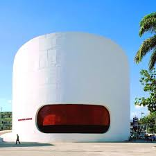
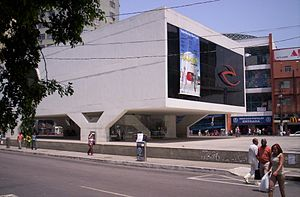
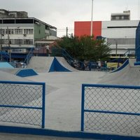

Teatro Raul Cortez

Em uma região onde os notíciarios sempre informam os pontos negativos da Baixada Fluminense, podemos encontrar cultura, com conteúdo de qualidade, sendo exposto para o público de diferentes idades e em diferentes dias da semana.
Um local onde Escolas, Faculdades ou qualquer instituíção que queira realizar algum tipo de evento, basta entrar em contato acessando o site.
Centro Cultural Oscar Niemeyer

O Centro Cultural Oscar Niemeyer é um centro cultural localizado na Praça do Pacificador, s/n, no Centro de Duque de Caxias, no Rio de Janeiro, no Brasil. Foi projetado por Oscar Niemeyer. É formado pelo Teatro Municipal Raul Cortez e pela Biblioteca Pública Municipal Leonel de Moura Brizola
Coneça um pouco da história de local na wikipédia. Não deixe de conferir a programação dos eventos no site do Centro Cultural
Praça Humaitá

Para os que gostam de lazer, esporte e muito mais, pode passar aqui na praça que você não vai se decepcionar. Há escolas nas proximidades, bancos, casas lotéricas, oficinas de automóveis, fica bem no Centro Comercial de Duque de Caxias, com pontos de ônibus que facilitam a chegada e a partida do seu passeio.
O que as pessoas falam da praça aqui. comente você também que achou da praça, e compartilhe com mais pessoas para que outros possom conhecer este local de lazer e esporte.